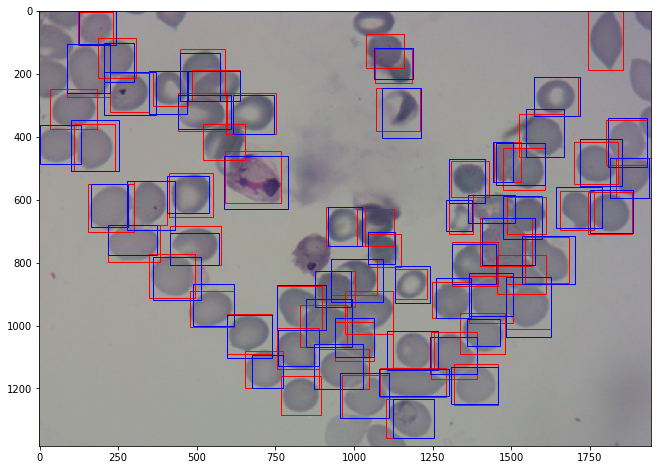
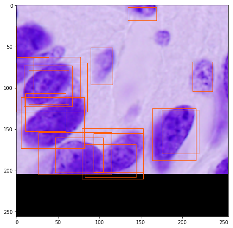

Broad Bioimage Benchmark Collection
Annotated biological image sets for testing and validation
P. vivax (malaria) infected human blood smears
Accession number BBBC041 · Version 1
Example images
-

-

Description of the biological application
Malaria is a disease caused by Plasmodium parasites that remains a major threat in global health, affecting 200 million people and causing 400,000 deaths a year. The main species of malaria that affect humans are Plasmodium falciparum and Plasmodium vivax.
For malaria as well as other microbial infections, manual inspection of thick and thin blood smears by trained microscopists remains the gold standard for parasite detection and stage determination because of its low reagent and instrument cost and high flexibility. Despite manual inspection being extremely low throughput and susceptible to human bias, automatic counting software remains largely unused because of the wide range of variations in brightfield microscopy images. However, a robust automatic counting and cell classification solution would provide enormous benefits due to faster and more accurate quantitative results without human variability; researchers and medical professionals could better characterize stage-specific drug targets and better quantify patient reactions to drugs.
Previous attempts to automate the process of identifying and quantifying malaria have not gained major traction partly due to difficulty of replication, comparison, and extension. Authors also rarely make their image sets available, which precludes replication of results and assessment of potential improvements. The lack of a standard set of images nor standard set of metrics used to report results has impeded the field.
Images
Images are in .png or .jpg format. There are 3 sets of images consisting of 1364 images (~80,000 cells) with different researchers having prepared each one: from Brazil (Stefanie Lopes), from Southeast Asia (Benoit Malleret), and time course (Gabriel Rangel). Blood smears were stained with Giemsa reagent.
Ground truth
The data consists of two classes of uninfected cells (RBCs and leukocytes) and four classes of infected cells (gametocytes, rings, trophozoites, and schizonts). Annotators were permitted to mark some cells as difficult if not clearly in one of the cell classes. The data had a heavy imbalance towards uninfected RBCs versus uninfected leukocytes and infected cells, making up over 95% of all cells.
A class label and set of bounding box coordinates were given for each cell. For all data sets, infected cells were given a class label by Stefanie Lopes, malaria researcher at the Dr. Heitor Vieira Dourado Tropical Medicine Foundation hospital, indicating stage of development or marked as difficult.
For more information
These images were contributed by Jane Hung of MIT and the Broad Institute in Cambridge, MA.
There is also a Github reposity that lists malaria parasite imaging datasets (blood smears).
Published results using this image set
These datasets will be evaluated in a publication to be submitted.
Recommended citation
"We used image set BBBC041v1, available from the Broad Bioimage Benchmark Collection [Ljosa et al., Nature Methods, 2012]."
Copyright
The images and ground truth are licensed under a Creative Commons Attribution-NonCommercial-ShareAlike 3.0 Unported License by Jane Hung.